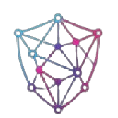

Tu privacidad ante todo. Seguridad 100% Offline.IronLock V1.0 es la bóveda digital definitiva para Windows. Sin conexiones a internet, sin suscripciones, sin registros ocultos. Bloquea, cifra y destruye tus archivos con seguridad de grado militar operando exclusivamente en tu hardware.
Obtener Licencia de por Vida - $15 USDA diferencia de la competencia, IronLock no se conecta a internet. No hay "copias automáticas en la nube" que puedan ser hackeadas, ni telemetría. Tus datos nunca abandonan tu disco duro.
La seguridad no debería ser un alquiler mensual. Paga $15 dólares una sola vez y obtén una licencia de por vida para la versión Instalable y la versión Portable. Fin de la historia.
Sin controladores de kernel invasivos que ralentizan tu PC. IronLock utiliza cifrado AES-256 y permisos nativos de Windows para garantizar protección irrompible sin dañar tu sistema operativo.
Bloquea y oculta carpetas enteras en tu equipo. Ni el Explorador de Windows ni otros programas podrán acceder a ellas sin tu contraseña maestra.
Crea contenedores blindados con encriptación AES-256-GCM. Al mover un archivo a la bóveda, el original se destruye de forma segura automáticamente.
Lleva tus archivos cifrados a donde vayas. Ejecuta IronLock directamente desde un pendrive sin instalar nada y sin dejar rastros en la computadora anfitriona.
Elimina archivos de forma permanente e irrecuperable. Nuestro algoritmo sobrescribe tus datos, imposibilitando su recuperación incluso con software forense.
Protección contra coacciones físicas. Configura una contraseña falsa que abre una bóveda de utilería con datos inocuos, manteniendo tus verdaderos secretos ocultos.
Gestiona y protege tus contraseñas, tarjetas bancarias y notas secretas directamente dentro de tu bóveda cifrada, aisladas de los gestores tradicionales.
Absolutamente no. IronLock está diseñado para funcionar 100% offline. No requiere internet para activarse, bloquear carpetas o cifrar archivos. Tu privacidad está garantizada por diseño.
Por tu seguridad, IronLock utiliza cifrado real sin "puertas traseras". Si pierdes la contraseña maestra, es matemáticamente imposible recuperar los datos cifrados de tu bóveda.
No. Es un pago único. Con tu compra obtienes acceso perpetuo a la versión 1.0 (tanto el Instalador como el Ejecutable Portable) sin renovaciones anuales ni cargos ocultos.
Actualmente, IronLock V1.0 está diseñado y optimizado exclusivamente para el ecosistema Windows (64 bits), aprovechando sus sistemas de permisos nativos para máxima eficacia.